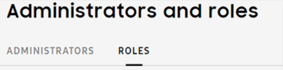
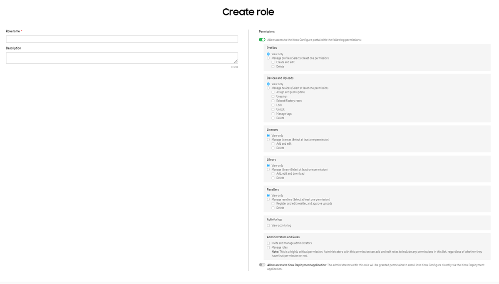
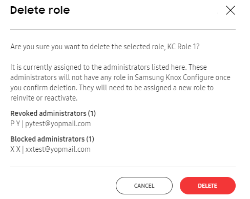

Manage admins and roles
Last updated July 26th, 2023
This topic describes how to invite and manage admins, as well as assign the required roles and permissions needed to complete an admin invitation.
Knox Configure now supports a new Role-Based Access Control (RBAC) service allowing customer (tenant) admins that are responsible for account creation (Super Admin) to assign more refined role permissions to individual admins as their specific enterprise requirements dictate. Though KC utilizes admin roles unique to the KC service specifically, the Super Admin role cuts across all supported services.
With the new RBAC service, existing customers will have their administrators migrated automatically. Administrators with their own unique set of permissions (manage administrators, delete devices etc.) will be assigned new roles that map to their current permissions. If needed, new roles beyond what the migrated admins are currently assigned can be created based on a list of permissions unique for each service.
Create a role
To create a role:
-
Select Administrators and Roles from the left-hand navigation menu.
-
Select the ROLES tab.

-
From the ACTIONS drop-down menu, select Create role.
-
Provide the following role details:

-
Role name — Enter unique name for the role to help you identify the newly created role during assignment.
-
Description — Enter a description for the role. Max 200 characters permissible.
-
Allow access to the Knox Configure portal — Admins with this role will be granted basic permissions. Note that additional permissions will need to be specified as needed.
-
Profiles — Add View only or Manage profile permissions. Add the ability to Create and edit and Delete to the role’s manage permissions.
-
Devices and Uploads — Add View only or Manage devices permissions. Add the ability to Assign and push update, Unassign, Reboot/Factory reset, Manage tags and Delete to the role’s manage permissions.
-
Licenses — Add View only or Manage licenses permissions. Add the ability to Add and edit, and Delete to the role’s manage permissions.
-
Library — Add View only or Manage library permissions. Add the ability to Add,edit and download, and Delete to the role’s manage permissions.
-
Resellers — Add View only or Manage reseller permissions. Add the ability to Register and edit reseller, and approve uploads, and Delete to the role’s manage permissions.
-
Activity log — Add the permission to View activity log to the role.
-
Administrative privileges — Specify the following role privileges: Invite and Manage administrators, and Manage roles.
Note
The ability to Create and manage roles is a highly critical permission. Admins with this permission can also add and edit roles to include any permissions in the list.
-
Allow access to Knox Deployment Application — Admins with this permission can enroll devices in Knox Configure using the Knox Deployment Application.
-
-
Click Save.
Edit or delete a role
Existing roles can be modified or deleted as their configurations warrant update or deletion from administrator assignment.
To edit or delete an existing role:
-
Select Administrators & Roles from the left-hand navigation menu.
-
Ensure the ROLES tab is displayed.
-
Select a role whose configuration requires deletion and removal from Knox Configure.
-
Either edit the configuration of the existing role and select SAVE, or select the DELETE button at the bottom of the screen to permanently remove the role.
Optionally revise the existing Role name and Description. When permissions require restriction to view only access for certain permission areas, consider selecting the View only option. Once assigned, no profile configuration, device management, license, or reseller administration is permitted, just view only access. If there are administrators currently using this role and screen displays stating the administrators assigned this role will receive updated permissions based on your role revisions. Select CONFIRM to proceed.
When deleting a role with administrators already assigned, existing administrators assigned to a role intended for deletion must be re-assigned to another role before the deletion can proceed. Any pending, revoked, or blocked admins assigned the deleted role are assigned a role of NoRole. Select the DELETE button to proceed with the role deletion.

Invite an admin
If you haven’t yet, ensure that you create a role prior to inviting an admin.
Once you’ve created admin roles, IT admins can be invited from within the Knox Configure portal as needed and assigned roles with unique permissions.
Note that there’s a limitation to administrative roles and permissions:
- Only selected IT admins are approved to enroll and manage devices on behalf of customers.
- When inviting admins, a Managed role permission is required.
- Existing admins without a Managed role permission are limited to inviting admins to a role that matches their own set of role permissions.
In the Invite administrator screen, the Role drop-down menu has been customized to correspond to the particular admin’s role when creating the invitation.
Knox Configure administrators can either be invited individually or in bulk:
Is this page helpful?